เว่าให้ฟังแหน่
ระบบจะพูดบรรยายข้อมูลนิทรรศการอัตโนมัติ
เมื่อผู้ใช้เข้าใกล้ในระยะ 50 เมตร
⚠️ คำแนะนำ: กรุณาเปิดหน้าจอนี้ทิ้งไว้และไม่สลับแอปพลิเคชัน เพื่อให้ระบบ GPS ติดตามตำแหน่งและอ่านออกเสียงได้อย่างต่อเนื่อง
รอการเริ่มต้น...